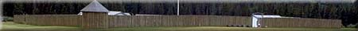
|
|
"Environmentally Sensitive Area". Please be careful where you walk and try not to disturb the natural environment. For additional information please contact Tourism Saskatchewan. | ||
| Fort Walsh National Historic Park | |||
| GPS: | 49d 36.20m N | 109d 48.37m W | 3408 feet |
| Location: | Cypress Hills Interprovincial Park. | ||
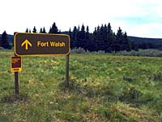 The North West Mounted Police (NWMP) first marched west in 1874. By all accounts, the historic journey was a nightmare of dust storms, blistering heat, mosquitoes, horseflies and bad water. | |||
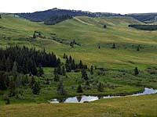 When the exhausted men reached Wood Mountain and found shady coulees, abundant game, fresh water -- and a Boundary Commission crew about to abandon a perfectly good post -- it's no wonder they simply moved in. | |||
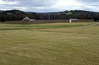 When the Mounties took over the Wood Mountain post, it became the first NWMP post in the southwest. Fort Walsh was built the following year. Less than a year later, the Fort's small garrison led by Major James Walsh faced a serious challenge; the arrival of 5,000 Sioux. | |||
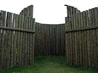 In 1876, after Sitting Bull defeated General Custer at Little Bighorn, thousands of Sioux fled north of the "Medicine Line" into Canada. Sitting Bull himself arrived in the spring of 1877. Major Walsh was sent to 'lay down the law' to the chief. He rode into Sitting Bull's camp with only six men at his side -- a kind of bravery the Sioux respected. During that first meeting, Walsh received Sitting Bull's assurance that his people would not use Canada as a base for raids into the United States. | |||
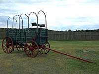 Walsh and Sitting Bull established not only a peace, but a personal friendship as well. Walsh described Sitting Bull as "the shrewdest and most intelligent living Indian, he has the ambition of Napoleon and is brave to a fault". | |||
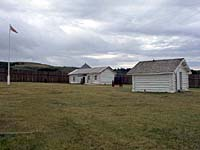 The Canadian government, however, wanted Sitting Bull and his Sioux followers to return to the U.S. They believed that Walsh's friendship was delaying the Chief's return, and so Walsh was soon replaced with a less sympathetic officer. | |||
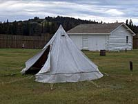 The strategy was to deny the Sioux food. The land had been hunted bare, the buffalo were gone, and starvation was a grim reality among the Indian tribes. | |||
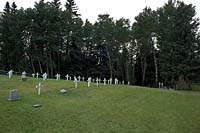 The Canadian government refused to supply food to the Sioux, while the American government promised provisions if the Sioux agreed to settle on reserves. With little choice, the Sioux Chief and his people returned to American soil in 1881. | |||
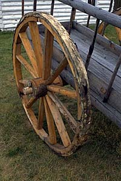 The North West Mounted Police force marched west from Manitoba in the summer of 1874 and constructed Fort MacLeod near Fort Whoop-Up in present day southern Alberta. The following year, in 1875, a number of men under Superintendent James Morrow Walsh came east from Fort MacLeod and built Fort Walsh in the Cypress Hills. | |||
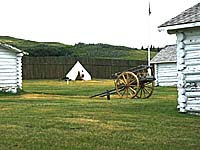 Law and order was needed in this area for, besides the task of befriending the Indian Tribes, the hills had become a sanctuary for American criminals. | |||
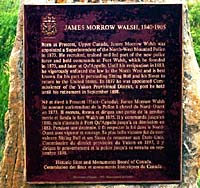 A large trading town grew up around the fort and Fort Walsh was the North-West Mounted Police headquarters from 1878 to 1882 when headquarters were moved to Regina. In 1883 the post was abandoned in favour of a location at Maple Creek on the new railroad. | |||
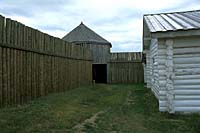 Built in 1875, Fort Walsh was the first North-West Mounted Police outpost in the Cypress Hills. A year later when thousands of American Sioux Indians sought refuge in the area after defeating Custer at Little Big Horn, Fort Walsh became the centre of N.W.M.P. operations for the entire southwest. | |||
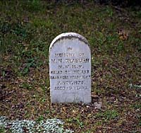 Today, the reconstructed fort is a national historic park. Staff in period costume greet visitors and set the mood for a journey back in time. Tour the stockade, barracks, workshops, stable, guardroom and commanding officer's residence. | |||
| James Morrow Walsh, 1840 - 1905 | |||
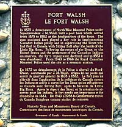 Born at Prescott, Upper Canada, James Morrow Walsh was appointed a Superintendent of the North-West Mounted Police in 1873. He recruited, trained and led part of the new police force and held commands at Fort Walsh, which he founded in 1875, and later at Qu'Appelle. | |||
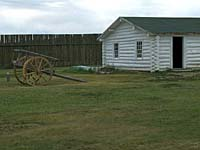 Until his resignation in 1883, James Morrow Walsh vigorously enforced the law in the North West and is best known for his part in persuading Sitting Bull and his Sioux to return to the United States. In 1897 he was appointed Commissioner of the Yukon Provisional District, a post he held until his retirement in September 1898. | |||
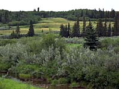 Here, on June 1, 1873, a party of American and Canadian wolf hunters, searching for stolen horses, attacked a large Assiniboine camp. They killed twenty or more Indians, put the rest to flight and returned to Montana. | |||
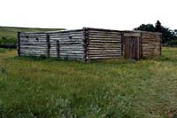 This incident hastened the recruitment and despatch to the Territories of the North West Mounted Police, whose officers arrested three of the alleged murderers and tried to secure the extradition of seven others. Although no convictions resulted, the efforts of the police convinced the Indians of the impartiality of the force. | |||
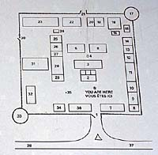 The plan is based upon one drawn from memory in 1931 by ex-Sergeant Abbott who was stationed at the fort from 1878-83. Photographic and documentary evidence confirm its general accuracy. | |||
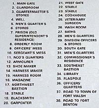 When the RCMP built the remount station in the 1940s, they laid out the buildings in the same way as those of the old fort. | |||